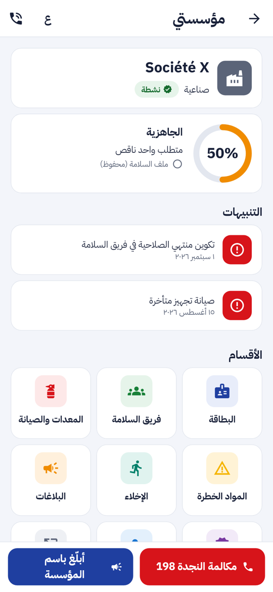
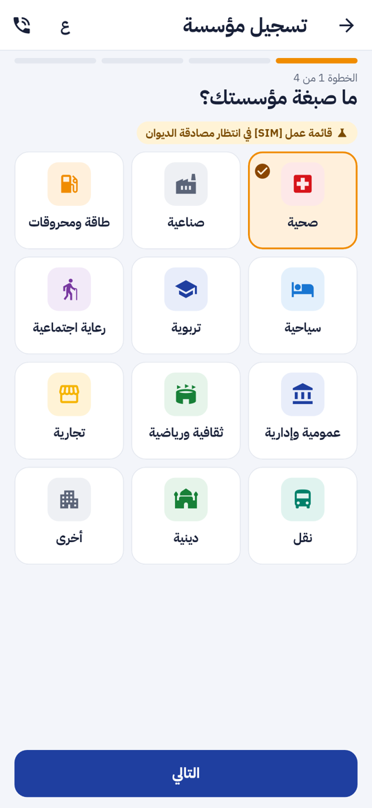
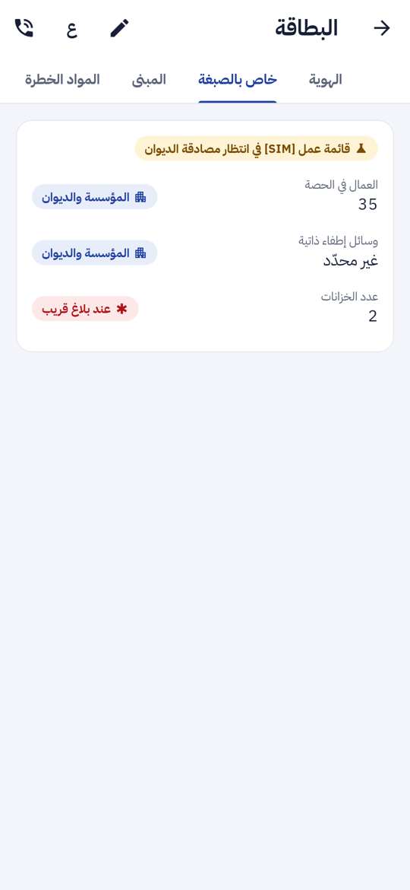
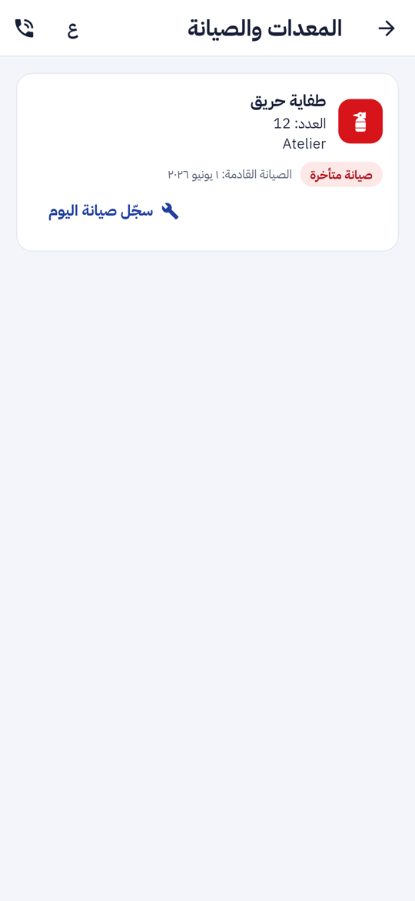
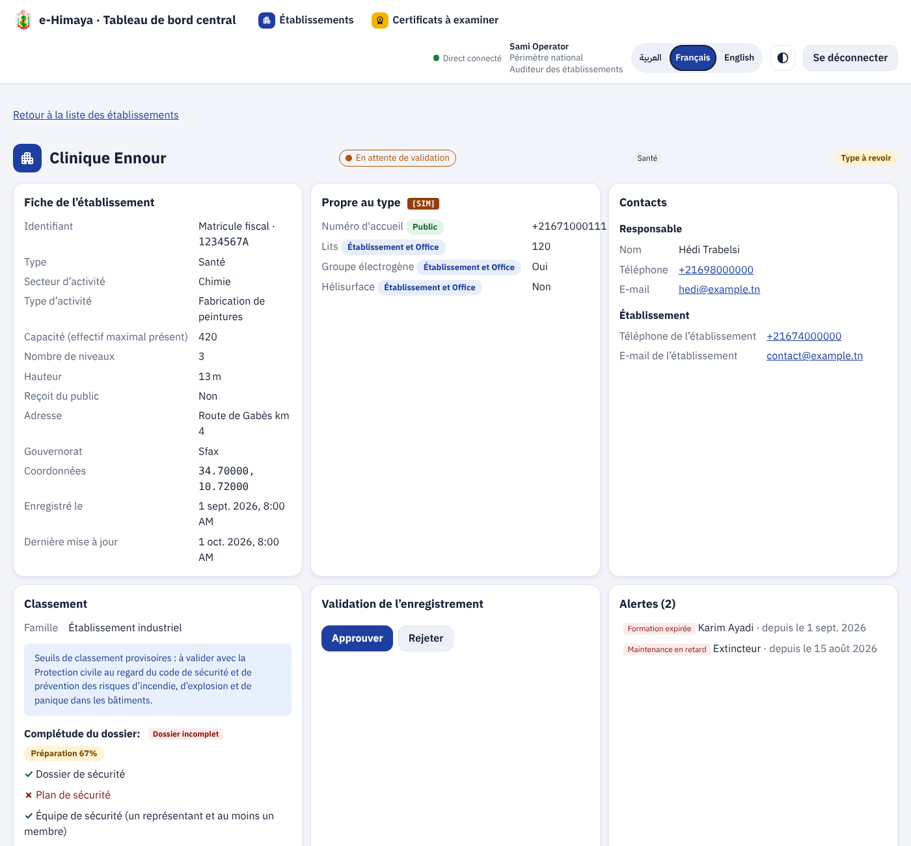

ء-حماية e-Himaya
تقرير المرحلة P2a: فضاء المؤسسة في التطبيق (الإضافة 12، الجزء الأول). اثنتا عشرة صبغة مع ترحيل القديمة، خانات خاصة بكل صبغة مع شارة تبيّن من يراها، نسبة الجاهزية، تسجيل المؤسسة من الهاتف في أربع خطوات، و«مؤسستي» بأقسامها
1. أين تقع هذه المرحلة من مسار المشروع
التبليغ
←
المعالجة
←
التحليل
←
مؤشرات الأداء KPI
←
التنبؤ بالذكاء الاصطناعي
←
اتخاذ القرار
- التبليغ: المؤسسة تبلّغ باسمها من الشريط السفلي، وتتصل بالنجدة 198 بلمسة واحدة.
- اتخاذ القرار: خانات الصبغة (عدد الأسرّة، الخزانات، المولّد…) تصل إلى قاعة العمليات عند بلاغ قريب، فيُعرف ما في المبنى قبل الوصول.
2. مراجعة ← إعادة تصميم ← تطوير
ما وجدته: ست صبغات فقط، منها «خاصة» التي لا تقول شيئا عن المبنى. فضاء المؤسسة كان في البوابة وحدها، والتطبيق يعرض ملخصا للقراءة فقط. لا شيء يقول للمؤسسة ما ينقصها.
- 12 صبغة: صحية، سياحية، تربوية، رعاية اجتماعية، صناعية، طاقة ومحروقات، تجارية، ثقافية ورياضية، عمومية وإدارية، نقل، دينية، أخرى. الترحيل 0044 يحوّل القديمة (فندقية ← سياحية، تعليمية ← تربوية…)، و«خاصة» تصبح «أخرى» مع شارة «الصبغة تحتاج مراجعة» يحسمها مراقب المؤسسات عند المصادقة. الترحيل قابل للتراجع، وجُرّب في الاتجاهين على صفوف حقيقية.
- خانات الصبغة: لكل صبغة خاناتها (عدد، نعم/لا، نص). لكل خانة درجة رؤية بشارة ملوّنة: عام أخضر، المؤسسة والديوان أزرق، عند بلاغ قريب أحمر. الخادم يصفّي حسب القارئ: المراقب لا يرى إلا العام وما للمؤسسة والديوان.
- الجاهزية: نسبة مئوية من المتطلبات الناقصة (ملف السلامة، فريق السلامة، الصيانة…) مع قائمة ما ينقص، تظهر في حلقة على الهاتف وفي البوابة واللوحة.
- التطبيق: تسجيل بأربع خطوات (الصبغة، الهوية مع فحص المعرّف والهاتف التونسي، الموقع من الهاتف والمبنى وخانات الصبغة، المراجعة). «مؤسستي»: الجاهزية، التنبيهات، شبكة الأقسام، البلاغات، وشريط سفلي. البطاقة بأربعة تبويبات (الهوية، خاص بالصبغة، المبنى، المواد الخطرة) قابلة للتعديل للمسؤول مع حماية النسخة. المعدات مع «سجّل صيانة اليوم»، الإخلاء، الشهادات، والأعضاء مع الدعوة.
3. لقطات
من اليمين: «مؤسستي»، الخطوة 1 من التسجيل، تبويب «خاص بالصبغة»، المعدات والصيانة. ثم صفحة المؤسسة في لوحة القيادة.





4. التقدم لكل جزء
| الجزء | ما أُنجز | التقدم |
|---|
| الخادم | 12 صبغة، الترحيل 0044، GET /public/org-kinds، التحقق من الخانات، التصفية حسب القارئ، الجاهزية، اختيار الصبغة عند المصادقة |
100% |
| التطبيق | التسجيل بأربع خطوات، «مؤسستي»، البطاقة بالتبويبات والتعديل، الأقسام بإجراءاتها السريعة |
100% |
| البوابة | خانات الصبغة في التسجيل والبطاقة، الجاهزية في النظرة العامة |
100% |
| لوحة القيادة | اختيار الصبغة عند المصادقة، شارة «الصبغة تحتاج مراجعة»، قسم «خاص بالصبغة»، الجاهزية |
100% |
تقدم P2a: 100%. تقدم P2 كله: حوالي 55% (يبقى P2b).
5. المحاكاة [SIM]
- [SIM] قائمة خانات كل صبغة ودرجة رؤيتها قائمة عمل اقترحتُها، تنتظر مصادقة الديوان. تظهر بالشارة الكهرمانية في التطبيق والبوابة واللوحة، وتُعدَّل في ملف واحد على الخادم.
- لا بيانات وهمية في قاعدة البيانات.
6. الاختبارات المطبقة
| الطبقة | جديدة في P2a | المجموع الآن |
|---|
| الخادم (pytest) | 7: قائمة الصبغات، التحقق من الخانات، الرؤية حسب القارئ، الجاهزية 100%، الصبغة عند المصادقة، الدوال المساعدة | 836 |
| لوحة القيادة (vitest) | 2 | 438 |
| البوابة (vitest) | 1 | 92 |
| التطبيق (flutter test) | 7: «مؤسستي»، البطاقة والتعديل، الأقسام، التسجيل بأربع خطوات، اتجاه الأرقام بالعربية، الصبغات، خانات الصبغة | 421 |
التحليل الثابت نظيف: eslint و tsc للوحة والبوابة، flutter analyze و dart format للتطبيق. جدول التتبع مُحدَّث.
8. المخرجات المحدّثة
- الملف الوصفي V5 (docx و pdf) في
spec/.
- مخططات UML: حالات استعمال المؤسسة وصنف المؤسسة مع «ChampDuType» (docx و pdf و zip) في
diagrams/.
- العرض للمسؤولين: 20 مرحلة، أعداد الاختبارات، الخطوة القادمة P2b، في
presentation/.
- مرجع التصميم مُعاد توليده: design-reference.html.
9. ملاحظات وانحرافات عن التصميم
- الشارة الطويلة كانت تخرج عن حدود الشاشة في الخطوط الكبيرة؛ صارت تلتف.
- رسالة التأكيد الجديدة تحلّ محلّ السابقة بدل أن تنتظرها.
10. ما يلي: P2b
تنبيهات المؤسسات الموجّهة مع تأكيد القراءة، التوعية حسب الصبغة، التمارين والتصريح بالأحداث، وصورة الصيانة.